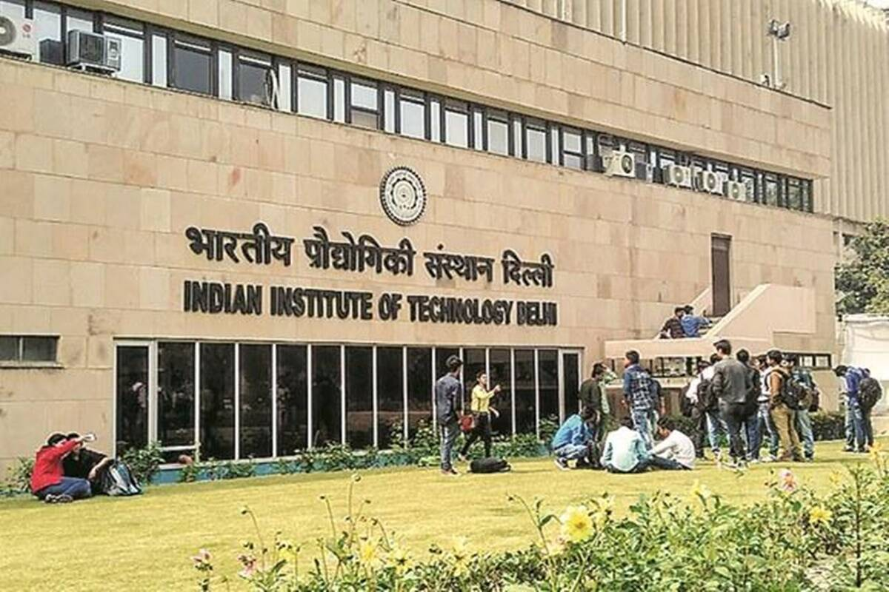
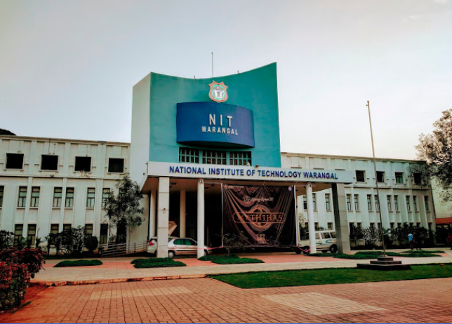
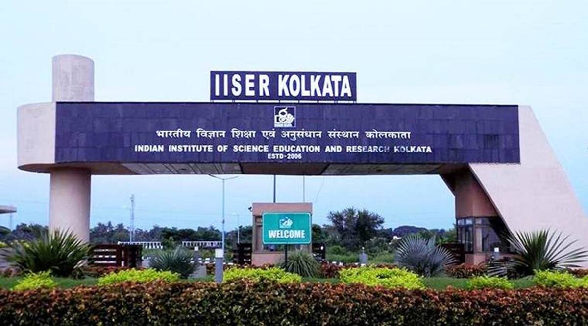

India has one of the largest higher education systems in the world that stands second in terms of the higher education network. The term ‘higher education’ with respect to India denotes the tertiary level education that is imparted after 12 years of schooling (10 years of primary education and 2 years of secondary education). The entire higher education ecosystem in India comprises around 1000+ universities and 42,000+ colleges imparting exceptional education. All these institutions fall under the purview of the Ministry of Education.
The institutions in India are furnished with state-of-the-art infrastructure, modern libraries, classrooms equipped with advanced amenities (such as smart class, computers, wifi-connectivity, etc). All in all, these top-grade resources facilitate interactive and 360-degree learning for the students. Due to these salient features, 3 Indian institutes namely, the Indian Institutes of Technology (IITs), the Indian Institute of Science (IISc), the National Institutes of Technology (NITs), Indian Institutes of Science Education and Research (IISERs) and Indian Institutes of Management (IIMs) have been featured in world top-ranking institutions lists. This solidifies the belief that India is emerging as a major education hub for both international and national students. Over the years with the combined efforts of public and private players, Indian higher education has grown impressively. The top-notch learning methodology opted in Indian institutes lets the students expand their visualizing ability and encourages them to think out of the box.
 IITs are central government owned public technical institutes located across India. They are under the ownership of Ministry of Education, Government of India. They are governed by the Institutes of Technology Act, 1961, which has declared them as Institutes of National Importance and lays down their powers, duties, and framework for governance as the country's premier institutions in the field of Technology. The Institutes of Technology Act, 1961 currently lists twenty-three IITs. Each IIT is autonomous, linked to the others through a common council (IIT Council), which oversees their administration. The Minister of Education, India is the ex officio Chairperson of the IIT Council.
The history of the IIT system nearly dates back to 1946 when Sir Jogendra Singh of the Viceroy's Executive Council set up a committee whose task was to consider the creation of Higher Technical Institutions for post-war industrial development in India. The 22-member committee, headed by Nalini Ranjan Sarkar, recommended the establishment of these institutions in various parts of India.
 The National Institutes of Technology (NITs) are the central government-owned-public technical institutes under the ownership of Ministry of Education, Government of India. They are governed by the National Institutes of Technology, Science Education and Research Act, 2007, which declared them as institutions of national importance and lays down their powers, duties, and framework for governance. The act lists thirty-one NITs. Each NIT is autonomous, linked to the others through a common council known as the Council of NITSER, which oversees their administration and all NITs are funded by the Government of India.
The President of India is the ex officio visitor of all the NITs. The NIT Council works directly under him and it includes the minister-in-charge of technical education in Central Government, the chairmen and the Directors of all the NITs, the Chairman of UGC, the Director-General of Council of Scientific and Industrial Research (CSIR), the Directors of other selected central institutions of repute, members of Parliament, Joint Council Secretary of MHRD, nominees of the Central Government, AICTE, and the Visitor.
 IISERs are a group of premier public research institutions in India. The institutes were established by the Government of India through the MHRD to provide collegiate education in basic sciences coupled with research at the undergraduate level. The institutes were formally established by the Parliament of India through the National Institutes of Technology, Science Education and Research (Amendment) Act, 2010 (an amendment to the National Institutes of Technology Act, 2007).
Seven IISERs have been established across the country, namely IISER Kolkata in West Bengal, IISER Pune in Maharashtra, IISER Mohali in Punjab, IISER Bhopal in Madhya Pradesh, IISER Thiruvananthapuram in Kerala, IISER Tirupati in Andhra Pradesh, and IISER Berhampur in Odisha. All IISERs were declared as Institutes of National Importance by the Parliament of India in 2012, to promote them as leading institutions in the country in the field of basic sciences along with its sister institutes like Indian Institute of Science, Bangalore and National Institute of Science Education and Research, Bhubaneswar.